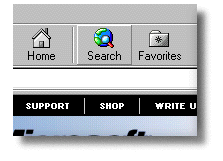
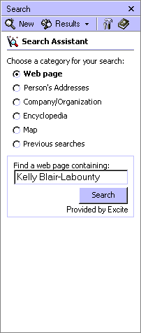
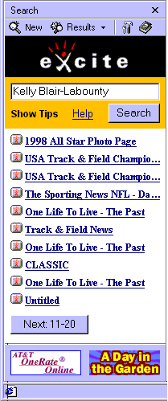
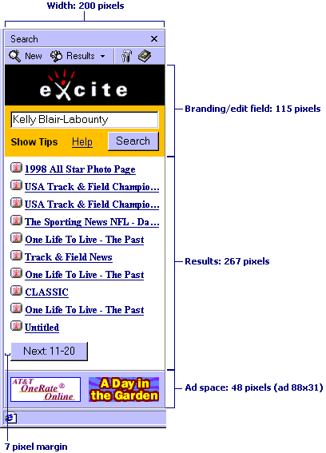

| ||
The Microsoft® Windows® Search Assistant, located inside the Search bar, is a new feature of Microsoft® Internet Explorer 5 that provides a common query interface for users when starting a search. It helps refine the search process by providing a task-based approach. Also, it is not necessary for users to remember the various common and specialty search engines that are available.
The Search bar is an ideal substitution for using frames to display search results. Frames tend to consume 20 to 30 percent of the available screen space. There is no easy way for the frame to be dismissed to make room for the main content area. The Search bar is a more extensible solution as a navigation and user interface mechanism.
The features and capabilities of the Windows Search Assistant are described in the following sections.

The Search Assistant was created to provide users with a single, unified search experience across different types of searches. The Search Assistant is a task-based search tool that allows users to specify what type of information they are looking for instead of what engine they wish to use for their search.

Users generally use results pages from a variety of search engines. It's critical for users to be able to easily use the results of any search service. The Search bar provides the ability to store detailed information—such as text abstracts, URLs, or file size—in the ToolTips that appear when the mouse pointer hovers over a result. This helps keep the results page simple and provides detailed information when needed.

Because the Search bar and the Search Assistant appear to be an element of Internet Explorer and not the Web page, the quality of the content loaded into the Search bar will directly affect the perceived quality of the browser. The Search Assistant was created to assist users in quickly finding information. To help accomplish these goals, the following user interface (UI) requirements have been established to be included in the customization page for the Search Assistant. These requirements are very simple to support, and they allow for a personalized look and feel.
Requirements for the Search Assistant UI include the following:
The Search bar is a tight, constrained space that challenges even the best designers to fit everything inside. Make sure that your pages fit within the default size of the bar (200 pixels by 430 pixels) without any scrolling. If you require scrolling, make sure that a significant number of actual results (not category results) are immediately visible. All links to the search results should open in the main browser window. Try to avoid opening other pages in the bar as the Search bar does not have Back and Forward buttons.
Because the Search bar is a tight space, you will have to prioritize your UI. The basic rule is to provide the user with the best information without a lot of visual clutter or confusion. From the top of the page to the bottom, your UI should follow this order: your branding, search query fields to refine, the search results, and finally, your ads or other services. If you decide to use ads, try to keep them toward the bottom of the page. Never force users to scroll past your ads to see their results.
Internet Explorer 5 offers a cartload of features that will make your results easier to use and allow you to convey more information to users without confusing them. These features include:

To help illustrate these UI requirements, here is an example layout. As you can see, these results are convenient and easy to read.
The Search bar, which is designed with a very specific UI model, appears on the left of the screen and should always act as the navigation control for what appears in the main content area. By following the guidelines, you provide a user experience that's consistent with the Favorites, History, and Channels features. The Search bar is a display component of the browser, and is not an HTML frameset. When designing your content, always try to provide a list of available navigation targets in the Search bar and navigate the content in the main area appropriately.
To target the main window instead of the search pane with your hyperlinks, specify the possible value _main for the TARGET attribute in your A elements. The following is a sample anchor that targets the main pane.
<A href="http://www.microsoft.com" TARGET="_main">
Alternatively, you can avoid specifying the TARGET attribute for each anchor and use the BASE element to target all navigations to the main pane.
<BASE TARGET="_main">
The Search Assistant can be customized to meet the search needs of a company or individual. For example, additional information about search results can be stored within ToolTips, and search results can be highlighted on a particular Web page.
Building customized Search Guides to search Web pages for a word or phrase is easy in Internet Explorer 5. The new NavigateAndFind method will load a specified Web page and scan the document for a match to the provided string. If a match is made, the string in the document is highlighted.
The following example will open the Microsoft Web site and search for Microsoft Corporation.
window.external.NavigateAndFind("http://www.microsoft.com","Microsoft Corporation");
To help conserve available browser window space and to improve the readability of search results, Internet Explorer provides the ability to define what information about a given link should be contained in a ToolTip. By defining the TITLE= attribute of an HTML anchor tag, Internet Explorer makes it possible to put abstract or supplemental information inside a ToolTip.
The following HTML sample makes the additional information in the ToolTip text possible when viewed with Internet Explorer.
<A href="http://www.acme-sports.com" TITLE="Latest sports news and scores, updated hourly. Interviews with winning players"> acme-sports - Latest sports news</A>
Move the mouse over this link: acme-sports - Latest sports news
The ToolTip automatically breaks lines at 3 inches and can contain at least a paragraph of text. However, no more than 1,024 characters are allowed within the ToolTip text. You can also force a new line or tab spaces in the abstract by using the reserved characters and 
 for carriage return and line feed, and 	 for tab spaces. For example, when viewing the following HTML sample with Internet Explorer, a ToolTip with a carriage return and line feed after line 1 is displayed.
<A href="http://www.microsoft.com" TITLE="The text that will be displayed on line1 The text that will be displayed on line2 	The text that will be displayed on line3 	The text that will be displayed on line4"> Using multiple lines in ToolTips</A>
Move the mouse over this link: Using multiple lines in ToolTips
The following questions are the top issues concerning authoring for the Search bar.
The Search bar provides a UI that is controlled by the user. It gives users much more control over how their browser display space is used, because they can control whether the Search bar is visible.
Did you find this topic useful? Suggestions for other topics? Write us!
© 1999 Microsoft Corporation. All rights reserved. Terms of use.